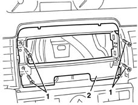

5570T10 car radio support - r+r - includes contact repair and supply circuit check
- Path
- Procedures > 55 ELECTRICAL EQUIPMENT > 5570 ACCESSORIES > 5570T car radio and car telephone > 5570T10 car radio support - r+r - includes contact repair and supply circuit check
- Kind
- repair procedure (removal / refitting; the operation number is the code)
- Applies to
- all engines; all production periods
- Interactive page
- https://sloeber94.github.io/elrnDB-lYpsln/en/#/2429440
Applies to: all engines; all production periods
 Removing
Removing
 Refitting
Refitting1. Undo the bolts.
2. Remove the mount.

Applies to: all engines; all production periods
Refitting
RemovingCheck that the mounting is undamaged and not deformed.
Insert the mount in its housing and fix it using the bolts.